来源：https://o85jza6ej5.feishu.cn/docx/HgjLdWdxHo8ezoxv9iLc4HSwnAh
大家好，我是Joey，跨境电商从业者，很高兴被邀请来小航海做分享。
前段时间，圈友黄小刀刀姐成立玩赚ChatGPT社群的时候，我作为后端交付团队的负责人，携手另外4位圈友，有幸参与了社群的冷启动，以及训练营的后端交付。
我是去年12月开始注册和使用ChatGPT，主要用于跨境电商的日常运营。
现在我们运营的小伙伴都会使用GPT。我的一个做跨境的朋友，最近在招设计师的时候，在招聘要求上也写明要懂得AI绘画和GPT。可以说，AI正在慢慢地渗透到我们的工作和生活中。
今天主要讲下ChatGPT在我们跨境电商的一些日常运用，分享主题包括以下两部分：
1、ChatGPT在跨境电商中的运用场景
2、ChatGPT在跨境电商中存在的机会
我们事先给ChatGPT一个角色设定，假设它是一个亚马逊的运营专家。那么GPT就可以帮助我们拓宽选品思路了。
我现在想要卖一款旅行包，顾客主要是北美地区的年轻人，可以让GPT给出一些产品定位参考，根据这些参考，我们可以结合亚马逊平台和一些第三方数据平台再做进一步的分析。
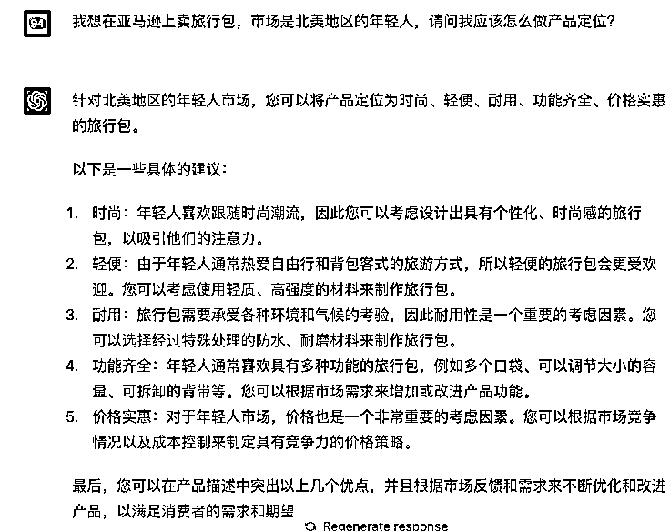
我们可以依据上面GPT的建议，从某一方面或者多方面去做产品的差异化定位，比方说，耐用性里的防水、防磨，功能齐全里提到的多个口袋，可拆卸，可调节大小容量，这些都是很好的一些产品卖点。
我们在做跨境电商的时候，如果不是在大城市，在一些二三线城市，要找到英语好点又懂运营的人才，还是比较难的，有时候借助翻译软件来写产品标题和描述，翻译出来的质量不尽人意，还需要人工校对。
因为ChatGPT的母语是英文，它是一个非常专业、非常标准英语的英语翻译器，没有任何的语法错误。我们去fiverr或者up work上去请那些VA来帮助我们做这些事情，帮我们写这些文案，他们也会有很多的英语的语法错误，或者说不地道，给人一种不专业的感觉。
所以有了GPT，你可以直接用中文提问，让它用英文输出。你有了GPT，你还有什么理由说你的英文不好，不能做好跨境电商了呢？这个理由完全就不成立了。
不管是亚马逊还是shopfiy独立站，我们可以通过GPT来写产品标题和产品描述，用中文提问，用英文输出。
接着上面的例子，我让它给这款旅行包写一下产品标题和描述。
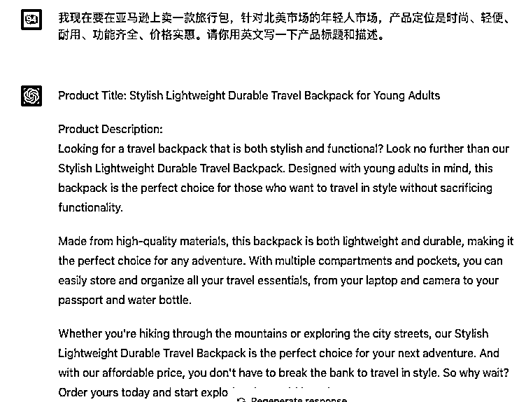
如果你觉得不满意，还可以让GPT再多写几个。也可以给与GPT相应的指令，比如标题需要再详细一点，或者突出产品某一个特点和指标。
亚马逊上还有一个重要的五点描述，介绍你的产品，大家为什么要购买你的产品，你可以让GPT来帮忙写，还是这个旅行包，我们让GPT用英文来写一下五点描述。
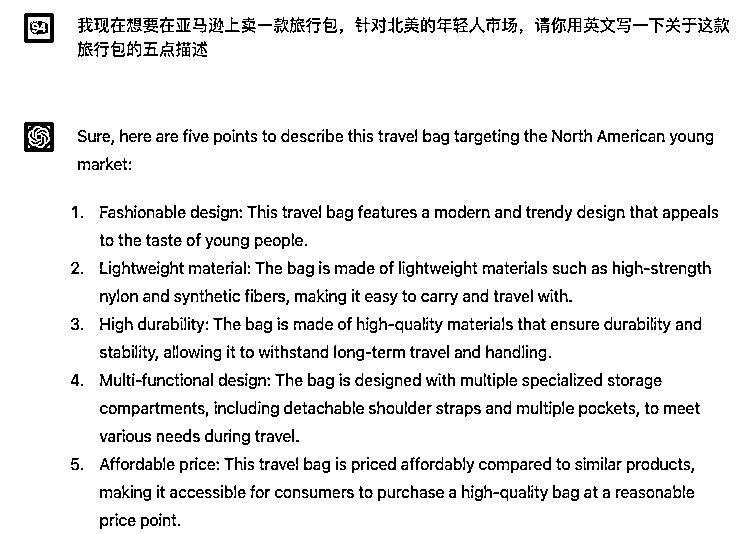
你可以让GPT针对某一个描述再优化一下。当然了，你也可以投喂给GPT一些同行的案例，让GPT模仿来写。
ChatGPT可以在很短的时间内，专业、高效地帮助你写出产品的标题、产品描述、五点描述，你需要做的可能就是添加一下关于你产品的一些关键词。
因为GPT可能添加的关键词不够多，你作为一个跨境卖家，对于你的产品，你可以添加一些更加专业的关键词，这样就好了。通过这样的操作，可以帮你节省很多的时间。
1）客户邮件营销
假设你现在已经收集了很多喜欢旅行、喜欢户外运动的客户邮箱，接下来，你就需要给这些客户写邮件营销，向他们推荐你的产品，到你的亚马逊网站或者独立站网站去购买，你可以让GPT来帮你写这些邮件。
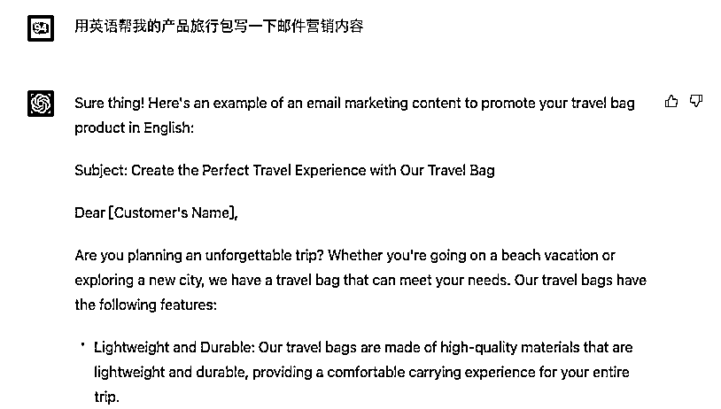
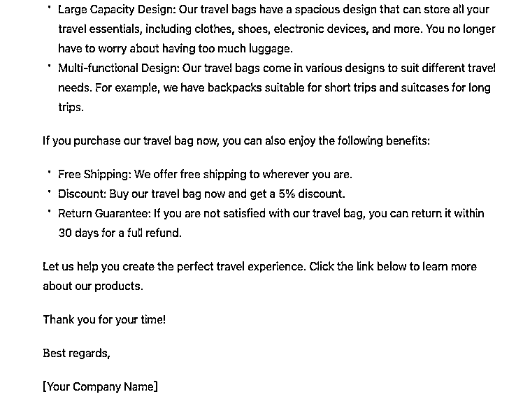
这是一封非常标准、非常专业的邮件营销，包含了主题、产品介绍、免费送货、优惠折扣、售后服务，你只需要在邮件里添加客户的名称和产品的网站，更改一下品牌名、你的名字，就可以了发给你的客户，向他们推广你的旅行包。
如果你的客户足够多，你可以多写几篇，一封一封的去发，每隔一个礼拜或者两个礼拜发一封，直到他购买你的产品。
2）弃置购物车的邮件营销
你如果做独立站，在后台会看到有很多客户已经把你的产品加入了购物车，但是他没有去下单，那么我们就可以让GPT来写一封邮件来提醒和促进客户下单。看看客户是忘了下单还是觉得太贵了。
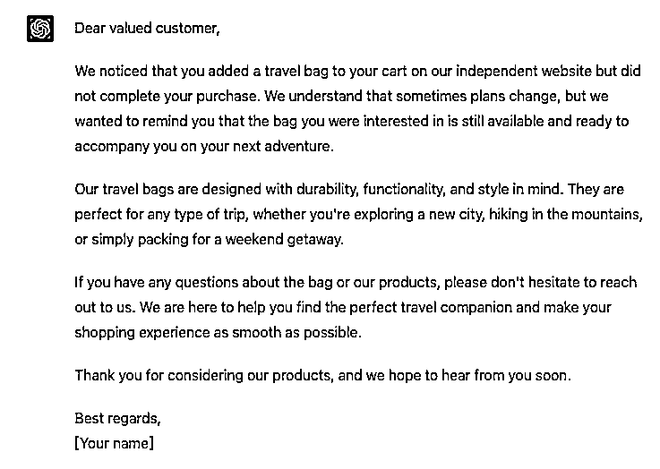
3）网红合作邮件
现在海外的TikTok很火，一些网红的流量的性价比还不错，你在他们的主页找到他们的联系方式，你就可以给TikTok上的网红写合作邮件，用GPT帮你轻松搞定。同样的，也可以给ins、YouTube上的网红写合作邀约信。
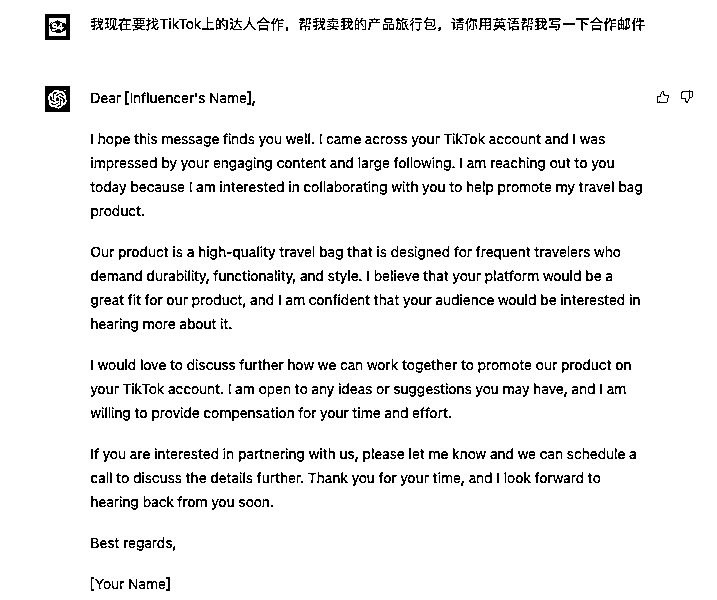
很多想买旅行包的顾客，他们可能会直接去谷歌上搜索，搜索旅行包的一些关键词，那么如果你在谷歌上，有足够多的文章来介绍和展现你的旅行包，你的产品就会有更多的曝光，引流到你的独立站或者是亚马逊店铺，让用户购买你的旅行包。
这么多文章怎么生产，怎么写，我们可能要花费很多的时间来收集素材、组接拼装别人的文章，或者要请一些VA来写，耗时又耗钱。我们可以让GPT来帮助我们批量生产文章。你需要做的就是在文章里加入你的网站地址就可以了。
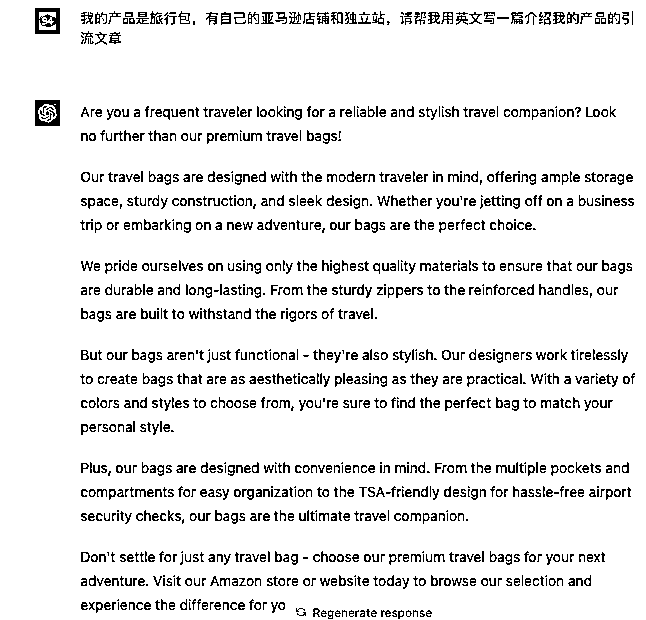
你还可以让GPT继续补充内容，比如补充6个顾客要购买我的旅行包的原因，GPT从耐用性、风格、客户满意度等方面，又给我们写了很详细的参考。
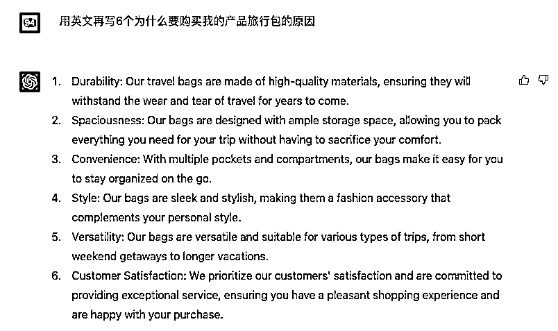
你可以把这些组合起来串联成一篇原创的SEO的文章，别人在谷歌上搜索旅行包，只要你的文章足够多，持续的发，SEO的作用就会显现出来，你的产品就会很容易被顾客找到了。
GPT生产的文章，有条理，有逻辑，权重高。前两天，有一位圈友做了一个新的网站，用GPT铺了300篇左右的文章，其中有80篇已经被谷歌收录。
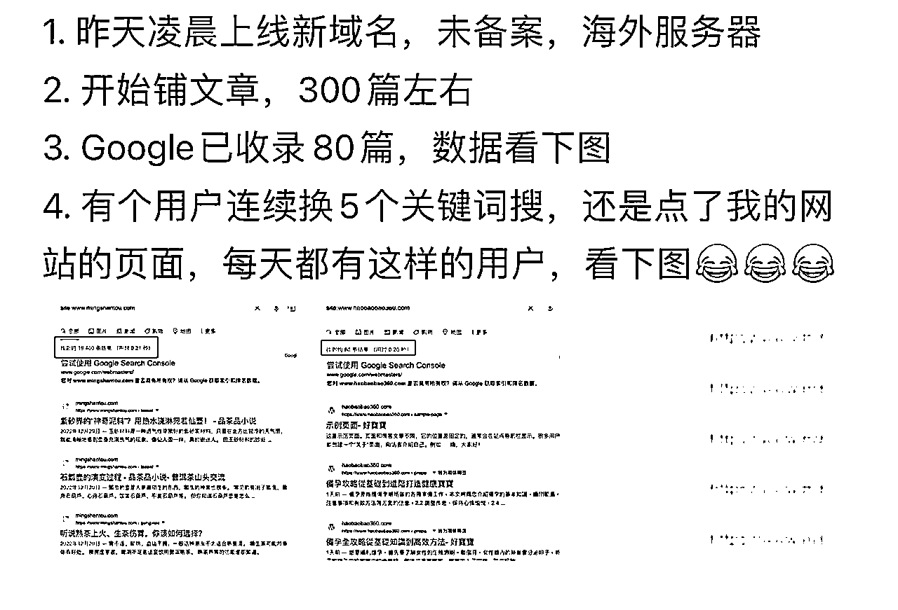
注意，不要一次性让GPT生成太多长文，容易卡顿，有时候服务器满负荷，还会丢失记录。
除了亚马逊和独立站，我们会在facebook、instagram、TikTok上开通账号，做一些站外营销，在上面发视频，图片，帖子，文章来介绍我们的产品，宣传我们的品牌。在这些社交媒体，运营人员每天都会遇到问题，不知道文案如何地写，想不出，英语的水平不够好，那么我们就可以用GPT来帮我们写。
比如说，我们现在想在instagram账号上发关于旅行包的帖子，设定GPT是一位经验丰富的instagram的运营专家，帮我写5条ins文案。
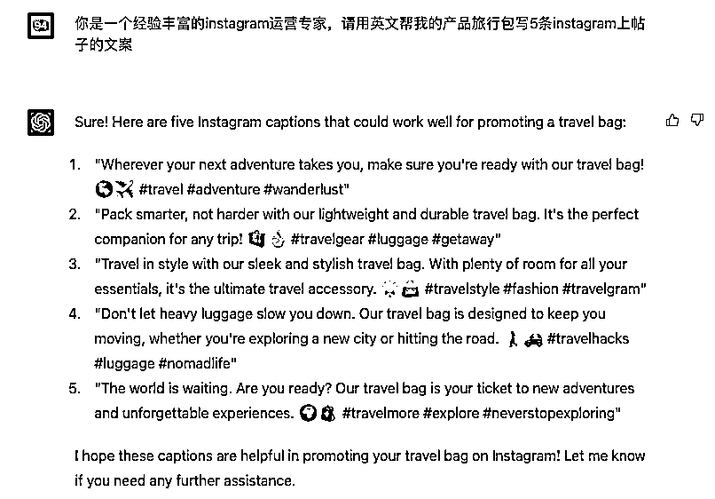
我们可以看到，GPT还会自动帮我们加上了hastag标签，这是instagram的文案风格，类似国内的小红书，是不是变得很简单？文案有了，配上相应的图片或者视频内容，帖子就可以发布了。
我们平常会在谷歌上，Facebook，TikTok，亚马逊站内上做品牌展示的广告，这些广告的文案，你平时要自己去想，去借鉴，去组合，非常的麻烦，你都可以让GPT来帮助你实现。
比如说，我们要在Facebook上打一个旅行包的产品广告，就可以告诉GPT：你是一个Facebook运营专家，请用英文帮我的产品旅行包写一条Facebook广告的文案
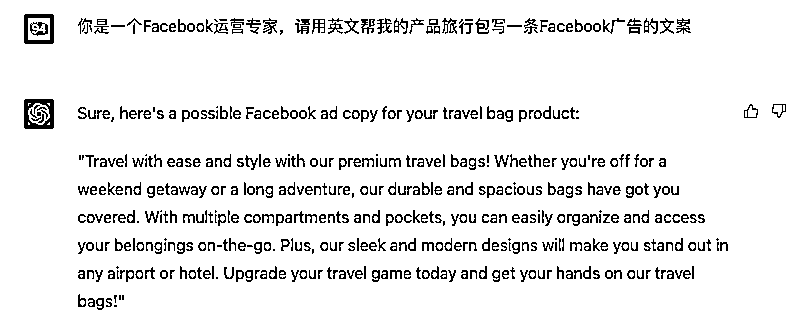
如果你觉得广告文案太长了，可以让GPT写简短一点。你可以和GPT提一些要求，做一些沟通，比如有创意、搞笑的文案，更贴近产品某项功能的文案，它都可以给你答复，GPT可以帮你实现跨境电商所有文案的一个需求。
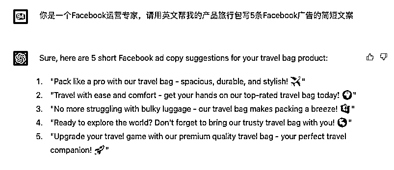
你想不出品牌名，不了解西方国家的思维，你希望你的品牌名，能够更加的西方化更加母语化，不想让客户认为这个品牌就是中国产的，中国代加工的一个产品，你可以让你GPT去帮你想品牌名。
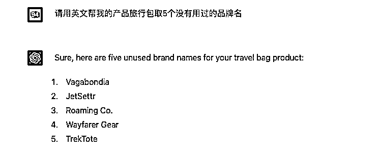
这些品牌名通常就比较西方化和本土化，美国人一看很容易认为是个本土牌子，会比较信任购买你的产品。当然，用GPT生成的品牌，你需要去核实和校对一下，这些名字是否已经被注册和使用。
你还可以让GPT去帮你写品牌的介绍，放在亚马逊的A+页面，独立站的网站上，或者印在产品的包装上，让顾客更加了解你的产品。
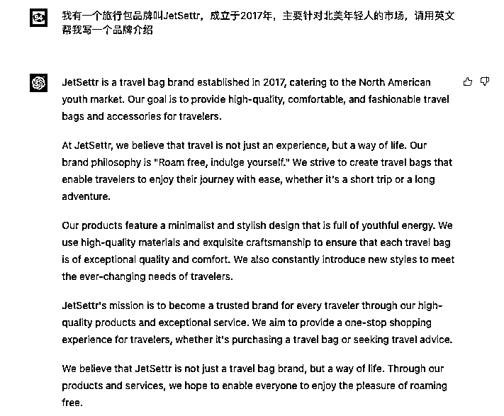
你可以补充你的品牌特色，我们是个美国品牌（注册地在美国），专注于年轻人市场等等的一些说明，让GPT去帮你完善品牌介绍。
我认为在跨境电商领域，基于ChatGPT的应用工具将会是一个很不错的机会，第一部分分享提到的运用场景，实际上有些是可以通过工具来高效地完成。
1）营销邮件工具
结合GPT开发成应用工具，用户只需要输入邮件类型、内容需求等指令，就能生成一份营销邮件；
2）SEO文章引流工具
结合GPT开发成应用工具，用户输入产品名称、产品特征、产品关键词、语种等指令，就能批量快速生成SEO文章。
有一位开发者开发了一款插件AIPRM for ChatGPT，就可以满足这个需求，还支持不同的写作风格。
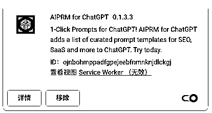
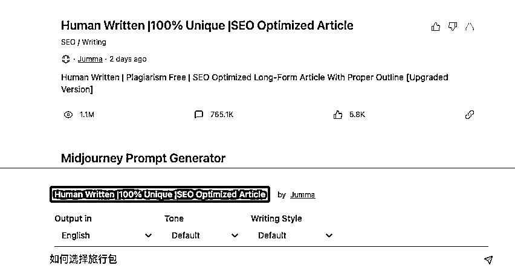
3）数据分析工具
数据分析在跨境电商是一个非常重要的环节，亚马逊里有很多的数据，比如商品评论，关键词，Listing的优化，QA等等，基于GPT的能力，快速进行商品分析、listing优化建议、评论分析、客户人群分析、关键词分析，帮助商家挖掘需求，产品差异化，提高竞争力。
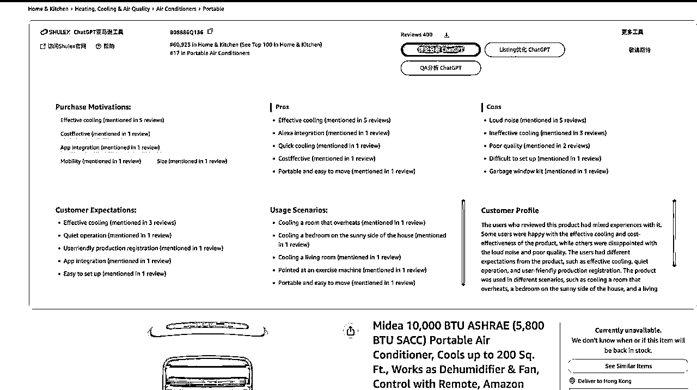
跨境电商的运用场景，还有很多可以用工具化来实现。大家可以多多挖掘。
以上，是我今天的分享内容。谢谢大家。欢迎交流：Joey_06606（请备注来意）